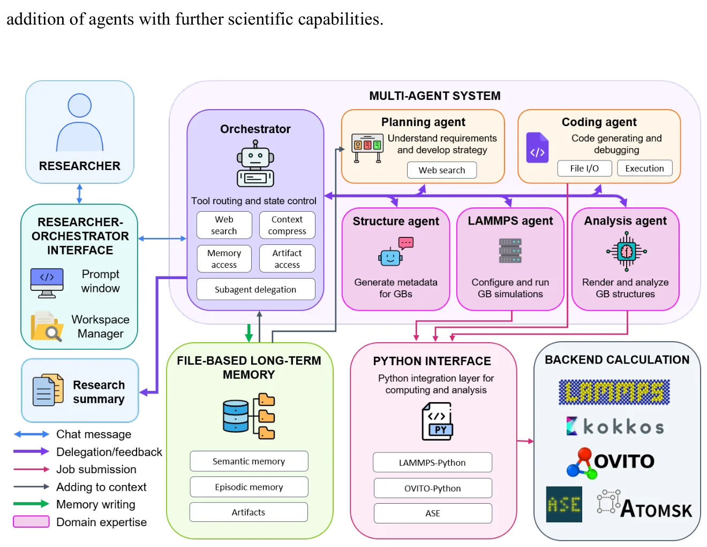
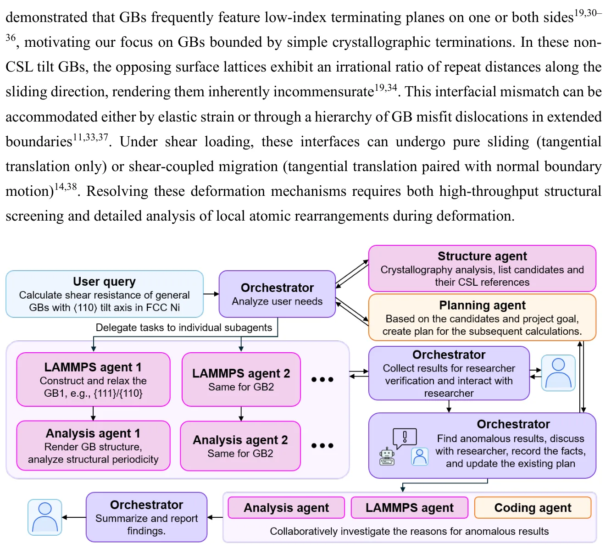
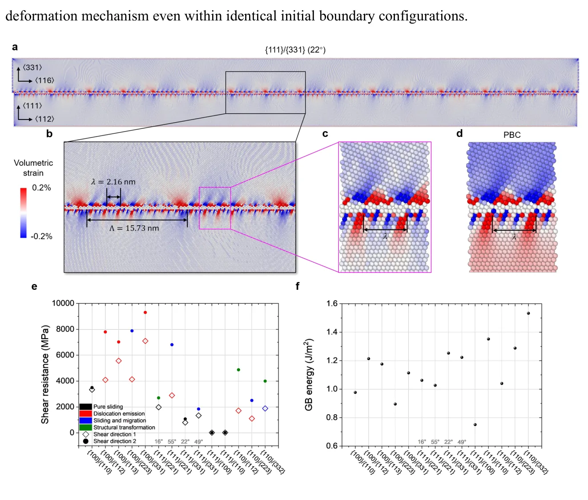
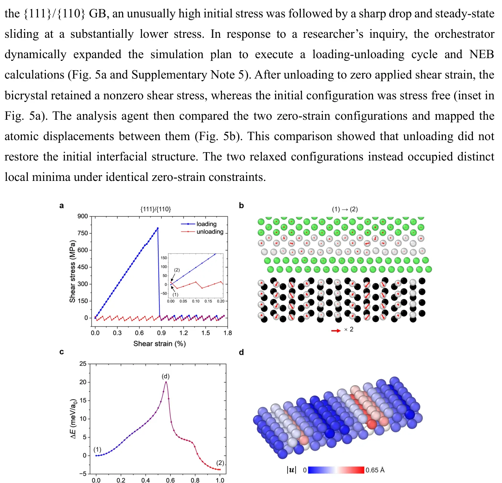

O Desafio da Complexidade Atômica
A ciência dos materiais enfrenta um paradoxo clássico: sabemos que as propriedades mecânicas dos materiais policristalinos são ditadas pelos contornos de grão (GBs), mas a complexidade estrutural desses interfaces torna o estudo sistemático extremamente difícil. Um contorno de grão geral possui cinco graus de liberdade macroscópicos e pode admitir múltiplas configurações atômicas metaestáveis. Isso cria um espaço de busca vasto e descontínuo, onde métodos tradicionais de alto rendimento frequentemente falham em capturar a física subjacente, focando apenas em triagem estatística sem interpretação mecanicista profunda.
Neste contexto, surge a proposta do GBClaw. Os autores, de instituições como Georgia Institute of Technology e University of Osaka, introduzem um framework de IA agêntica projetado especificamente para investigar a estrutura e deformação de contornos de grão gerais. Diferente de pipelines automatizados estáticos, o GBClaw integra modelos de linguagem grandes (LLMs) em uma arquitetura modular que permite replanejamento dinâmico e interação humana. O objetivo não é apenas gerar dados, mas conduzir descobertas mecanicistas, identificando hierarquias de defeitos e modos de deformação que escapam a análises convencionais.

Arquitetura Agêntica e Coordenação
O núcleo do GBClaw é uma arquitetura baseada no LangChain e LangGraph, implementada em Python. O sistema utiliza LLMs (especificamente GPT-5.6 Sol e Luna, roteados por complexidade de tarefa) para atuar como um orquestrador. Este orquestrador não é apenas um chatbot; ele gerencia um ecossistema de cinco agentes especializados, cada um com ferramentas específicas para simulação, análise e codificação. A memória hierárquica baseada em arquivos garante que o estado da investigação seja persistido e recuperável, essencial para tarefas de longa duração que envolvem múltiplas iterações de simulação.
Os agentes especializados incluem um planejador de tarefas, um construtor de modelos, um executor de simulações (via LAMMPS), um analista estrutural (via OVITO) e um gerador de código. A inovação reside na capacidade do orquestrador de delegar tarefas, integrar resultados heterogêneos e produzir relatórios de pesquisa. O sistema é projetado para ser 'human-in-the-loop': o pesquisador define os objetivos, avalia os achados intermediários e guia investigações follow-up quando anomalias são detectadas. Isso mitiga o risco de alucinações ou erros físicos comuns em sistemas autônomos puros.
Fluxo de Trabalho: Do Roteiro à Simulação
O workflow do GBClaw é dividido em etapas sequenciais e paralelas. Inicia-se com a seleção cristalográfica: o sistema identifica contornos de grão assimétricos não-CSL (Coincidence Site Lattice) próximos a referências Σ específicas. Para este estudo, foram selecionados 14 configurações de contornos de grão de inclinação assimétrica ⟨110⟩ em níquel. O agente de estrutura então constrói bicristais compactos com condições de contorno periódicas (PBCs) no plano do contorno, excluindo inicialmente dislocações de desajuste secundárias (SGMDs) para isolar efeitos locais.
Após a construção, os modelos são relaxados energeticamente usando o potencial Howells-Mishin para Ni-Cr. O agente de simulação aplica deslocamento de cisalhamento incrementalmente, calculando a tensão de cisalhamento necessária para mover o contorno. Paralelamente, o agente de análise examina as configurações atômicas para identificar defeitos interfaciais, como dislocações de desajuste primárias (PGMDs) e secundárias. Se o orquestrador detectar respostas mecânicas anômalas ou ambiguidades estruturais, ele aciona um replanejamento dinâmico, solicitando ao pesquisador ou a agentes específicos que realizem cálculos direcionados, como caminhos de energia mínima (NEB) para entender barreiras energéticas.

Descobertas: Hierarquias de Defeitos e Resistência
A aplicação do GBClaw a 14 contornos de grão em níquel revelou insights críticos sobre a resistência ao cisalhamento. O sistema identificou hierarquias de defeitos complexas, onde PGMDs (dislocações primárias) e SGMDs (secundárias) coexistem. Uma descoberta chave foi a diferença substancial na resistência ao cisalhamento entre contornos com e sem SGMDs. A presença de SGMDs altera significativamente o modo de deformação, sugerindo que a microestrutura do contorno não é apenas um defeito passivo, mas um modulador ativo da mecânica do material.
Os autores destacam que a ausência de SGMDs em modelos compactos pode levar a subestimações da resistência real ou a mecanismos de falha não representativos. O framework permitiu comparar diretamente essas configurações, mostrando que a resistência athermal (sem influência térmica explícita nas simulações de minimização de energia) varia drasticamente dependendo da presença e configuração dessas dislocações. Isso reforça a necessidade de incorporar hierarquias de defeitos completos em simulações de alto fidelidade para prever corretamente o comportamento mecânico de materiais policristalinos.

Mecanismo de Reconstrução Metaestável
Um dos casos mais ilustrativos do paper é a análise do contorno {111}/{110}. Durante o cisalhamento, o sistema detectou uma resposta mecânica não intuitiva. O agente de análise, guiado pelo orquestrador, investigou a estrutura atômica antes e depois da deformação. A descoberta foi que o contorno passou por uma reconstrução local metaestável, alterando sua configuração energética. Essa reconstrução criou uma barreira energética adicional, explicando a alta resistência observada.
O framework não apenas simulou o evento, mas também calculou a barreira energética associada usando métodos NEB (Nudged Elastic Band). Isso permite aos pesquisadores entender não apenas 'o que' acontece, mas 'por que' acontece em nível atômico. A capacidade de rastrear a evolução estrutural e correlacioná-la com propriedades mecânicas em tempo real é um avanço significativo em relação a simulações estáticas tradicionais, onde tais transições poderiam ser perdidas ou mal interpretadas.

Limitações e Crítica Honest
É crucial destacar as limitações metodológicas do estudo. As simulações usam supercélulas compactas com PBCs, o que restringe a distribuição espacial e as interações de longo alcance das defeitos de linha. Isso pode suprimir caminhos de deformação ativos em contornos estendidos reais. Além disso, as tensões calculadas representam limiares de instabilidade athermal, não limites superiores universais. A ausência de dinâmica de temperatura finita nas simulações de minimização de energia significa que processos ativados termicamente não foram capturados diretamente.
Outro ponto de atenção é a geração dinâmica de código pelos agentes. Embora flexível, a repetida geração de scripts pode introduzir inconsistências algorítmicas entre execuções. Os autores recomendam a conversão de scripts validados em ferramentas persistentes e estruturadas após verificação física. Isso reforça a ideia de que a IA agêntica atual não substitui o rigor da validação humana, mas a amplifica. A verificação em camadas e a supervisão de especialistas continuam indispensáveis para garantir a correção física dos resultados.
Conclusão: O Futuro da IA em Ciência dos Materiais
O GBClaw demonstra que a integração de IA agêntica com expertise de domínio pode ponte entre triagem computacional de alto rendimento e descoberta mecanicista profunda. Ao automatizar tarefas repetitivas e permitir que pesquisadores se concentrem na interpretação física e no direcionamento de investigações, o framework aumenta a eficiência e a profundidade da pesquisa. No entanto, ele não é uma caixa preta mágica; é uma ferramenta que exige interação humana crítica e validação rigorosa.
Para a comunidade de desenvolvedores e cientistas de dados, o GBClaw serve como um caso de estudo valioso sobre como implementar workflows agênticos complexos em domínios científicos. A arquitetura modular, o uso de memória hierárquica e a integração com ferramentas científicas estabelecidas (LAMMPS, OVITO) oferecem um blueprint para outras aplicações em ciência dos materiais e além. O futuro pode ver sistemas como este evoluindo para loops fechados que incluem refinamento de potenciais de aprendizado de máquina e validação experimental, criando um ciclo completo de descoberta acelerada por IA.
Takeaways Práticos
Para quem trabalha com simulações materiais, o GBClaw oferece um novo paradigma: a automação não substitui a descoberta, mas a estrutura. A capacidade de detectar anomalias e iniciar investigações direcionadas é um diferencial chave. Para desenvolvedores de IA, a implementação em LangChain/LangGraph com agentes especializados mostra como escalar raciocínio complexo em tarefas científicas. O papel do humano muda de executor para supervisor estratégico, focando em física e não em sintaxe de código.
As limitações técnicas, como o uso de supercélulas compactas e a ausência de dinâmica térmica explícita, devem ser consideradas ao interpretar os resultados. Os valores de resistência ao cisalhamento são limiares athermal para configurações específicas, não propriedades universais do material. A validação humana permanece crítica, especialmente ao lidar com código gerado dinamicamente. O GBClaw é uma ferramenta poderosa, mas sua eficácia depende da qualidade da interação humano-IA e da rigorosidade da validação física.
O que fica
- GBClaw usa LLMs para orquestrar simulações atômicas, permitindo replanejamento dinâmico e descoberta mecanicista em contornos de grão.
- O framework identificou que hierarquias de defeitos (PGMDs e SGMDs) influenciam drasticamente a resistência ao cisalhamento em níquel.
- Limitações incluem uso de supercélulas compactas e simulações athermal, que podem não capturar todos os mecanismos de deformação em escala real.
- A interação humana é essencial para validar resultados físicos e direcionar investigações de anomalias detectadas pela IA.
Paper original: GBClaw: An agentic AI framework for atomistic grain boundary research and mechanistic discovery
Comentários
Nenhum comentário ainda. Seja o primeiro.